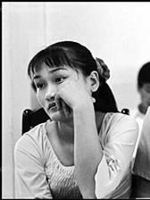
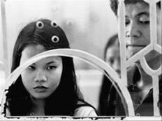
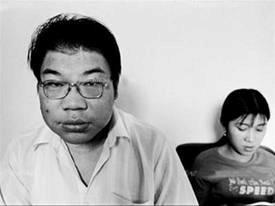

Tiền Phong - Tôi đã chín lần bị Trương bắt lại nhà. Tôi hiểu ra sức mạnh của xã hội đen Đài Loan, như một tấm lưới khổng lồ. Có lần đàn em của Trương tìm ra tôi, có lần đích thân Trương đến dụ tôi về. Cũng có lần nhớ quá, qua ngày thứ ba, tôi chủ động gọi điện về cho Trương.

Trương Văn Huy đã cầm dao chém sâu vào cánh tay của chính anh.
Tôi hốt hoảng vơ giẻ rách trên sàn chận lên vết thương máu đầm đìa của anh, thét lên:
- Anh làm cái gì đấy? Anh điên à?
Trương trái lại, giàn giụa nước mắt nhìn tôi nói:
- Anh yêu em! Chém em thì thà anh chém chính anh còn hơn!
Sau buổi tối đầy máu và nước mắt ấy, cuộc sống của tôi thay đổi hẳn.
Tôi không biết phải làm gì nữa. Ra đi thì không cầm lòng, ở lại thì quá khổ sở. Bất kỳ một chuyện gì không vừa ý, Trương đều lôi tôi ra đánh đập.
Khách mua trầu đều là nam giới, trao đổi với khách vài câu anh cũng tát tôi tối tăm mặt mũi. Nhưng ngay sau đó, anh lại quỳ xuống khóc lóc van xin tôi đừng bỏ đi.
Anh mang những chi phiếu rất nhiều tiền về đưa tôi cất giữ, như để tôi thấy anh rất tin cậy tôi. Anh đưa tôi đi mua quần áo đắt tiền, tôi lại có thêm những bộ đồ lót đẹp và những màu sơn móng tay đẹp nhất.

Thế nhưng, hễ tôi mở miệng nhắc tới gia đình ở Việt Nam, anh lại quát lên rằng họ chẳng liên hệ gì tới anh, đừng làm phiền anh như thế. Và anh nhắc đi nhắc lại, anh không thể chia sẻ tôi cho ai thêm lần nào nữa.
Tôi đã bỏ trốn nhiều lần, trên chiếc xe máy cũ kỹ của nhà. Tôi muốn bỏ đi thật xa.
Có lần tôi ra đi tay không, không mang theo gì. Có lần tôi mang theo ít quần áo phòng thân. Cũng có lần tôi chạy xe ra ga, vứt xe tại cổng ga rồi lên tàu, với một chiếc vé vừa mua vội trên máy bán vé tự động, mua chiếc vé của chuyến tàu chạy sớm nhất mà không nhìn xem nơi đến là đâu.
Tôi đã chín lần bị Trương bắt lại nhà. Tôi hiểu ra sức mạnh của xã hội đen Đài Loan, như một tấm lưới khổng lồ. Có lần đàn em của Trương tìm ra tôi, có lần đích thân Trương đến dụ tôi về. Cũng có lần nhớ quá, qua ngày thứ ba, tôi chủ động gọi điện về cho Trương.
Tôi thấy mình như con kiến trong bài ca dao ngày xưa mẹ tôi hát cho tôi nghe, con kiến mà leo cành đa, leo phải cành cụt leo ra leo vào
Bỗng nhiên tôi nghĩ tới mẹ. Tôi muốn về Việt Nam.
Lần thứ mười chạy trốn, Trương không tìm ra tôi nữa, vì tôi đã bay về Việt Nam.
Con trai tôi đang mọc răng sữa, nó rúc vào mẹ trong cơn sốt nhưng hoàn toàn không có phản xạ đòi bú, có lẽ bởi nó chưa từng được bú mẹ.
Ba tôi mừng nhưng không nói gì, đi ra đi vào quanh quẩn, bảo tôi có thích ăn gì không thì bảo mẹ đi chợ.
Những giây phút được ôm con vào lòng, ngắm nó ngủ, vui sướng biết bao.
Tiệm sinh tố của Ngà giờ trở thành quán cà phê Trung Nguyên, bàn ghế thay đổi, có mấy nhân viên phục vụ trẻ măng.
Tôi đứng với nó ở cổng bịn rịn, chồng sắp cưới của nó trẻ hơn nó hai tuổi, nhưng rất ra dáng đàn ông. Cũng là dân công trình, ăn to nói lớn, nhưng chiều vợ hết mực.
Nó kêu tôi vào ngồi trong quán, tôi nói, chịu, tao không uống nổi. Ngà dỗi, bảo, tự tay tao pha mà mày chê hả? Hay bây giờ chỉ thèm cà phê Đài Loan, chỉ những cái gì của Đài Loan thì mày mới thấy ngon? Chồng Việt mà mày còn chê nữa là!
Ngắm tôi buồn rầu, Ngà nhận xét:
- Mày không chỉ gầy đi, mày còn già đi nhiều lắm, gái một con mà như nạ dòng, trông sầu đời lắm!
Tôi bảo:
- Thằng bồ tao giá mà nhìn thấy tao đứng nói chuyện với mày, nó sẽ cầm dao rượt tao chạy trối chết.
Ngà trợn mắt không tin vào tai mình. Tôi nói:
- Thật đó, nó sẽ nghĩ tao có thể bị đàn bà con gái dụ dỗ trở thành đồng tính, hoặc nếu quen biết có chỗ dựa thì sẽ bỏ nó mà đi. Nhiều hôm nó đuổi đánh, tao phải chạy đi trốn hết cả đêm, sáng sau mới dám về.
Ngà văng tục, nó bảo, mày không bỏ nó đi mà tại sao lại cứ bắt bồ với nó làm gì rồi về kể khổ, mà nếu thế thì sao mày về đây được?

Tôi nói: Chuyện dài lắm. Tao đã trốn nhiều lần rồi đấy chứ! Ngà nói: Mày về đây phụ tao bán cà phê, đã nhiều đứa lấy chồng Đài Loan quay về Việt Nam rồi, mày về đây mà nuôi lấy con, tao thấy ba má mày mỗi lần đẩy thằng cu ra đây chơi thường thở dài, lau nước mắt. Có khách gọi gì đó, Ngà chạy vào quán rồi lại hối hả chạy ra, bảo tôi:
- Ở đây, thôi đừng đi nữa, chờ tao tí nhá!
- Thôi, tao về đây!
Tôi chạy xe bâng khuâng qua quận Một, qua cổng giảng đường Đinh Tiên Hoàng, mùa tốt nghiệp, sinh viên tấp nập qua, chờ nhau túm tụm trò chuyện trong sân trường.
Tôi ngần ngừ đứng bên này đường. Mới chỉ hơn hai năm, đời tôi đã ra thế này. Còn phải sống bao nhiêu năm nữa mới được bình yên?
Tôi quay xe về nhà, thương con tôi quặn thắt. Cuộc sống yên bình là do mình chọn. Tôi hoàn toàn có thể lựa chọn một cuộc sống khác, thế mà tại sao cứ đi về phía sóng gió?
Tôi mới hai mươi tư tuổi, một chồng, một đứa con, ngủ với bốn người đàn ông, là cô dâu Việt vừa bị bỏ rơi vừa đang chạy trốn.
Tôi vô cùng giàu có, tôi đang có trong tay hơn một tỷ đồng. Một số tiền nằm mơ cũng không thể có. Số tiền này đang nằm trong nhà băng ở Đài Loan.
Tôi không biết có thể rút số tiền này qua chi nhánh ngân hàng Đài Loan tại Việt Nam hay không, dù sao tài khoản cũng mang tên tôi. Tôi đang giữ toàn bộ giấy tờ hợp pháp, sổ gửi tiền, thẻ rút tiền, hộ chiếu và thẻ cư trú của tôi cũng vẫn còn thời hạn.
Nhưng trong số đó, chỉ có vài vạn tệ là của tôi, còn lại tất cả đều là từ số chi phiếu mà Trương đưa cho tôi. Trong đó là tiền dính máu, tiền cờ bạc, tiền đòi nợ thuê, tiền bán ma túy, tiền cầm đồ lãi suất cao, tiền phi pháp.
Tôi không có ý định dùng tiền bẩn của anh ta. Chắc chắn Trương cần tôi hơn số tiền này, nhưng tôi cũng thế, tôi cần chính bản thân mình hơn số tiền này. Tôi nghĩ sẽ kiếm cách trả lại anh ta.
Thế nhưng đã hơn một tháng trôi qua, tôi hoàn toàn không hề có tin tức gì của Trương. Tôi gọi điện sang Hoa Liên hỏi người chị họ đang ở đây, xem Trương có gọi điện không. Trước đây có một lần tôi trốn tới nhà chị ở Hoa Liên, Trương đã lần được theo tìm tôi. Chị nói, Trương không hề gọi điện tìm tôi như mọi lần.
Tôi gọi điện tới quán ăn Việt Nam ở ga Đào Viên, Trương biết chỗ này có người quen của tôi, Trương đã đảo qua đây nhiều lần mỗi khi tôi bỏ trốn. Các chị cho biết, không thấy bóng dáng của Trương hay đàn em.
"Tôi mới hai mươi tư tuổi, một chồng, một đứa con, ngủ với bốn người đàn ông, là cô dâu Việt vừa bị bỏ rơi vừa đang chạy trốn. "
Tôi hoang mang. Tôi không dám làm gì đống tiền đồ sộ này, nhưng tôi không lẽ đã tiêu tan trong đời anh ta như thế? Hay đã có việc gì xảy ra, anh ta đã thật sự cầm dao tự sát như từng doạ?
Một tuần lễ sau, tôi rốt cuộc quyết định gọi điện cho Trương Văn Huy. Huy khóc trong đầu dây nói, hãy quay trở lại đây, anh rất yêu em, anh không biết vì sao nhưng anh không thể thiếu em được, em tin hay không thì tùy.
Tôi nén lòng, nói với đầu dây xa xôi kia:
- Tôi sẽ trả lại tiền cho anh, trả tất cả, anh hãy buông tha cho tôi.
- Tôi chỉ cần em, tôi không cần tiền!
- Tôi cần nuôi con, con tôi cần tôi. Tôi không sang Đài Loan nữa!
- Anh nhớ em lắm, anh đang rất đau đớn, hôm em bỏ trốn, vì vội đi tìm em, anh đã ngã từ đầu cầu thang xuống đất, hiện anh đang bó bột nằm bất động trong bệnh viện.
Thì ra đó là lý do Trương đã không đi lùng sục tôi. Tôi không biết có nên tin hay không.
Một ngày sau, tôi đăng ký vé máy bay sang Đài Loan. Tôi chỉ định sang để xem thực hư và rút tiền chuyển sang tài khoản của Trương trả cho anh thôi. Rồi đường ai nấy đi, tôi sẽ về Việt Nam nuôi con.
Nào ngờ tôi ra đi tới tận ngày hôm nay chưa một lần quay lại Sài Gòn.
Tấm vé khứ hồi quay về thành phố Hồ Chí Minh ấy, tôi vẫn giữ trong tập giấy tờ cá nhân của tôi, một lần vô tình giở nó ra, tôi đã thổn thức khóc.
Dường như có một điều gì đó nếu đã đổ vỡ trong đời rồi thì khó mà hàn gắn lại được nữa. Cho dù thời gian, dù tôi cố gắng, dù tôi thiện lương, những người đến trong đời đều khiến tôi đau đớn.
Trương khỏe lên tức thời gian cãi cọ của chúng tôi nhiều lên. Vào ngày anh tập tễnh đi lại được anh vớ gạt tàn thuốc đập vào đầu tôi, tôi ngất xỉu, máu giàn mặt.